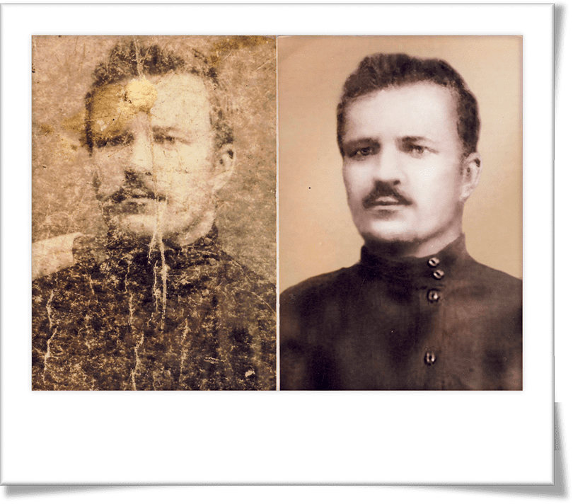
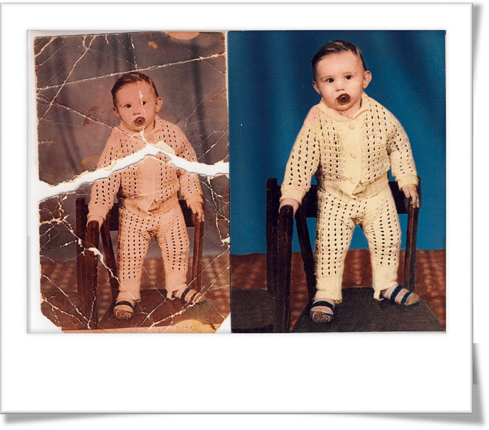
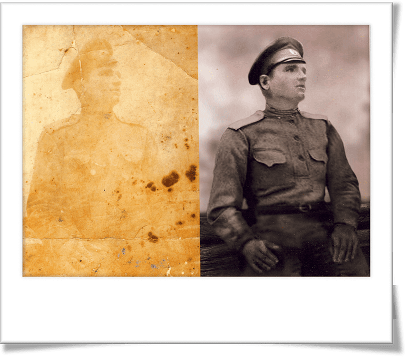

Восстановление фото
Как восстановить старые фотографии, когда время отнеслось к ним безжалостно? - Срочно нести к нам! Наши профи смогут качественно отреставрировать фото, вернуть былой цвет и исправить дефекты.


